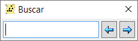

y
y  para navegar.
para navegar.
La búsqueda rápida se utiliza para encontrar rápidamente a una persona. Puede acceder a la búsqueda rápida en la ventana principal a través del menú "Editar\Búsqueda" y en la ventana del diagrama de árbol a través del mismo menú, o utilizando la tecla de acceso rápido [Ctrl + Q].
Sólo tienes que introducir en la ventana abierta cualquier parte del nombre y utilizar los botones y para navegar.
